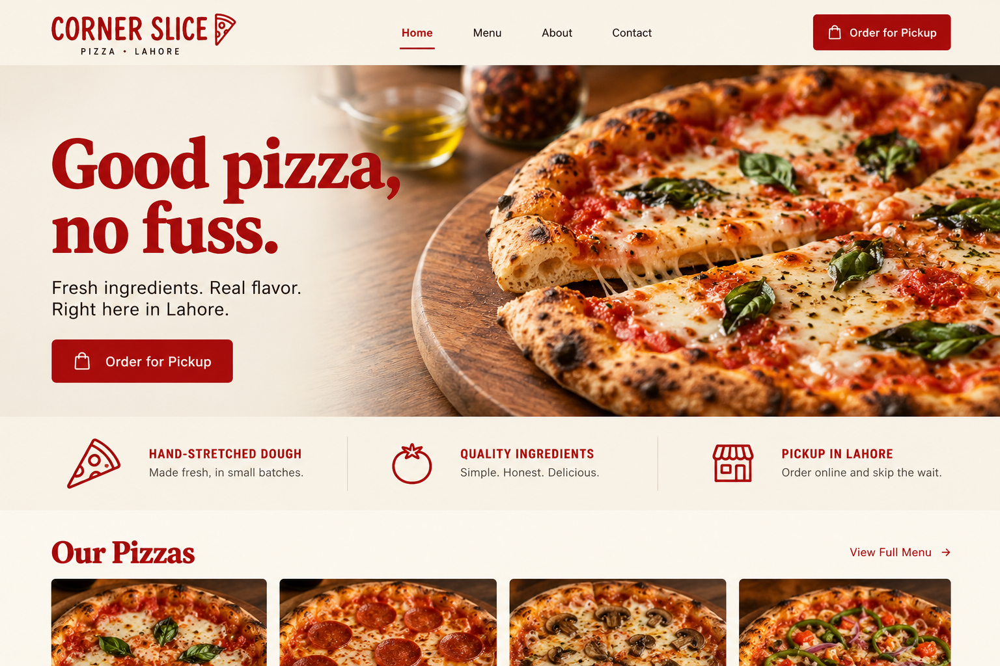
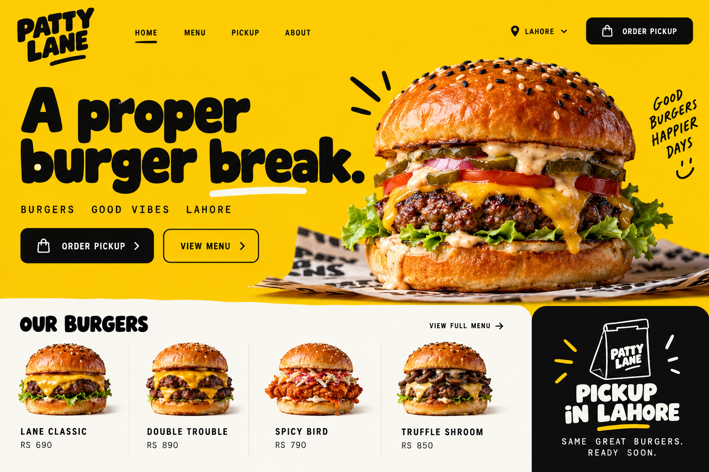
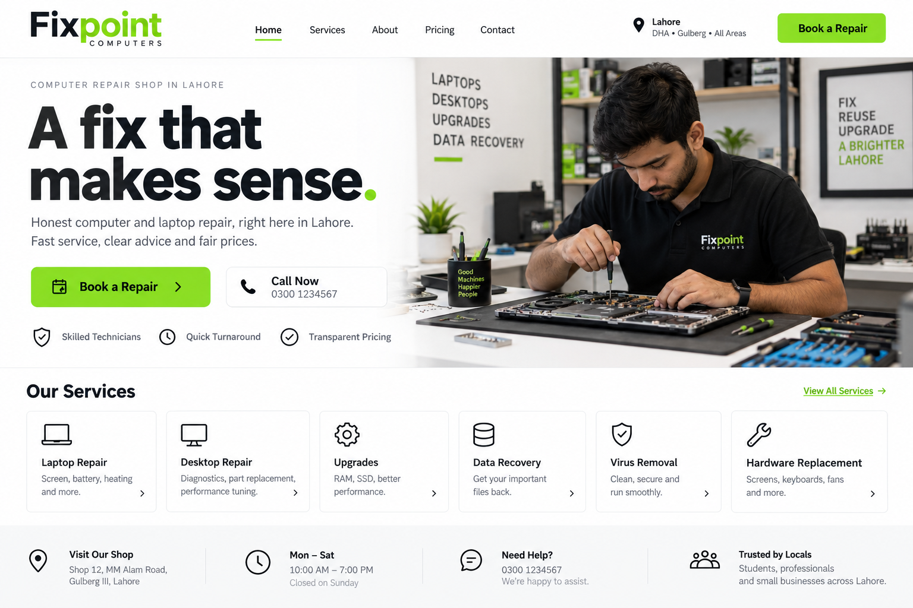
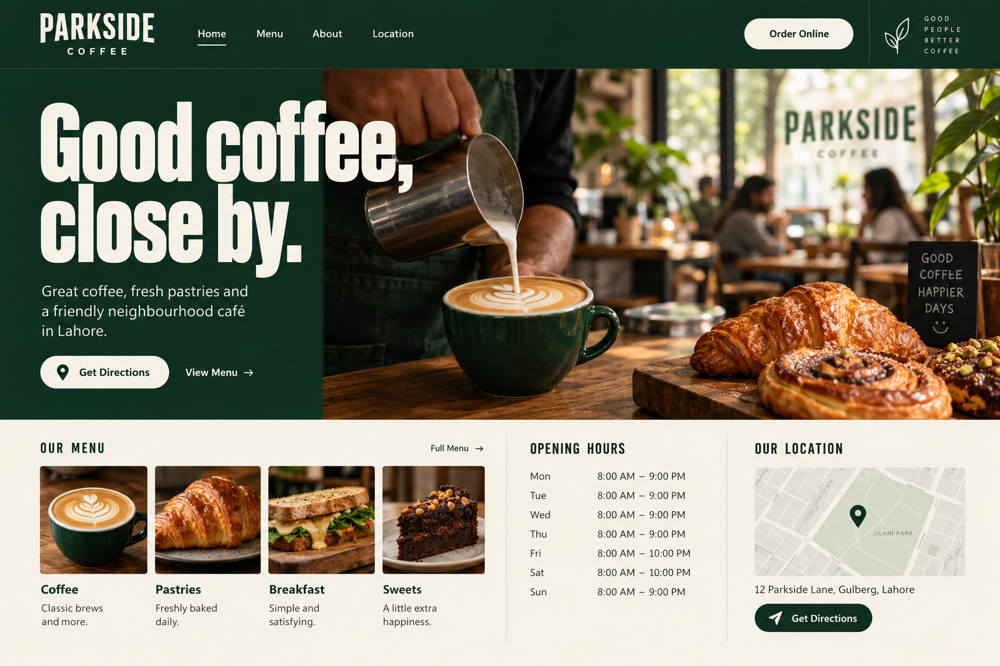
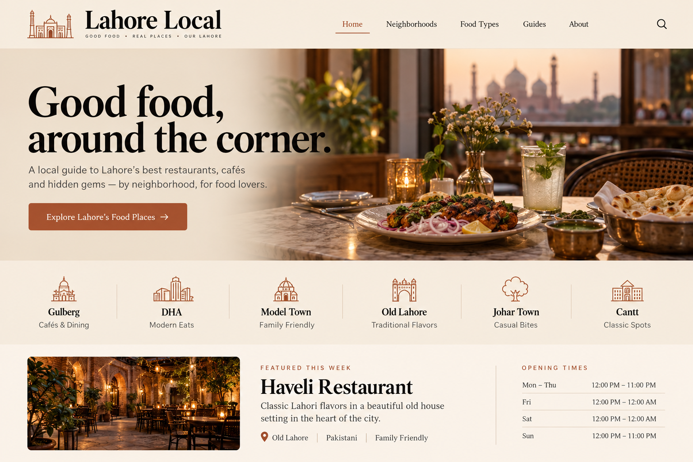
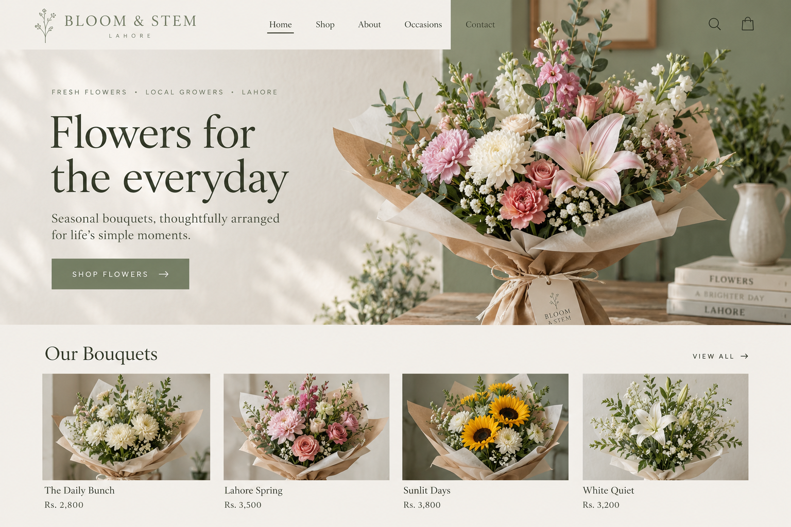
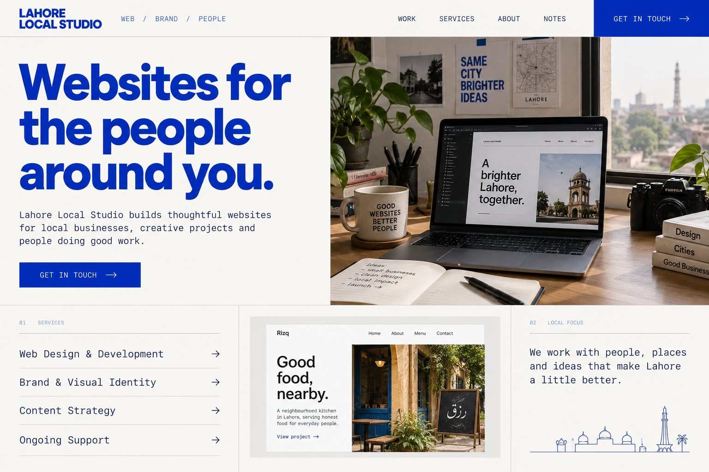

LOCAL IDEAS, USEFUL SITESPORTFOLIO / 03
SAMPLE PROJECTS
Everyday businesses.
Useful websites.
A few practice concepts for local businesses. Each puts useful details, such as menus, services, and contact information, up front.
07 SAMPLE CONCEPTS07 LOCAL BUSINESS TYPESMADE
WITH LAHORE IN MIND





